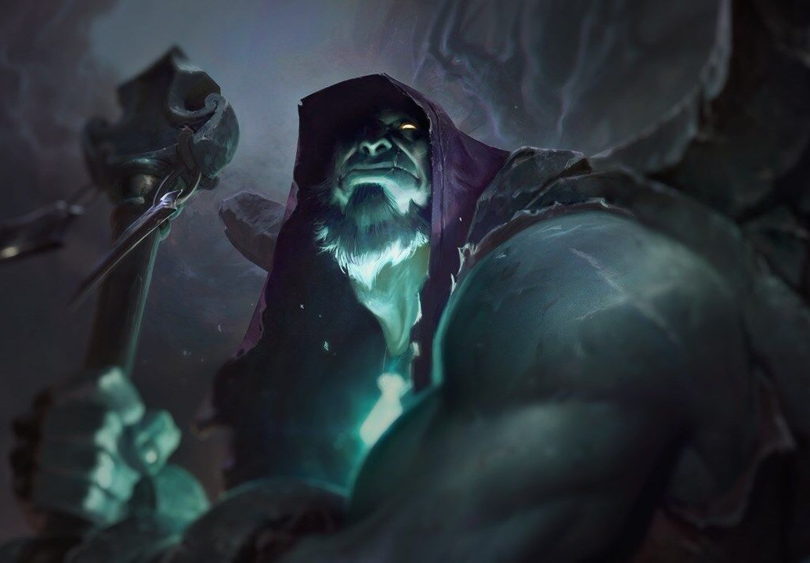
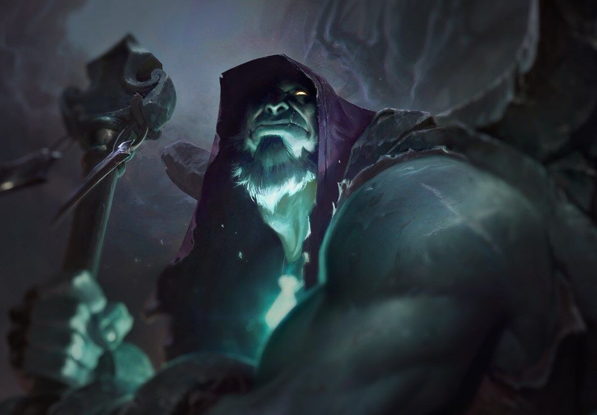

Ezen az elátkozott vidéken valaha egy nemes, felvilágosult civilizáció élt, amelyet a szövetségesei és küldöttei úgy neveztek: az Áldott-szigetek. De több mint egy évezreddel ezelőtt egy sosem látott varázskatasztrófa áttörte a határt az anyagi és a szellemvilág között, gyakorlatilag egyesítve a kettőt... és minden élőlényt egyetlen pillanat alatt pusztulásra ítélt. Napjainkban a szigeteket egy gonosz Fekete Köd veszi körül, és magát a földet is sötét mágia szennyezte be.
Azok a halandók, akik bátorkodnak ezekre a sivár partokra hajózni, lassan elveszítik az életerejüket, és ezzel előcsalogatják a holtak telhetetlen, nyughatatlan szellemeit. Akik vesztüket lelik a Ködben, azok arra kárhoztatnak, hogy örök időkre ezen a rémálomba illő helyen kísértsenek tovább – de ennél is szörnyűbb, hogy az Árny-szigetek ereje évről-évre egyre nagyobbra nő, így a legerősebb lidércek egyre messzebb és messzebb merészkedhetnek Runaterra földjén.
 
